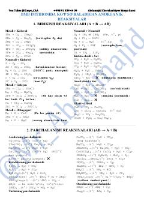

ADBMB imtihonlari uchun eng muhim anorganik kimyo reaksiya tenglamalari to'plami.
Ushbu qo'llanma anorganik kimyo bo'yicha BMB imtihonlarida eng ko'p uchraydigan reaksiya tenglamalarini jamlagan. Unda birikish, parchalanish, almashinish va redoks reaksiyalari, shuningdek, sanoat usullari va sifat reaksiyalari qisqa va tushunarli tarzda keltirilgan.